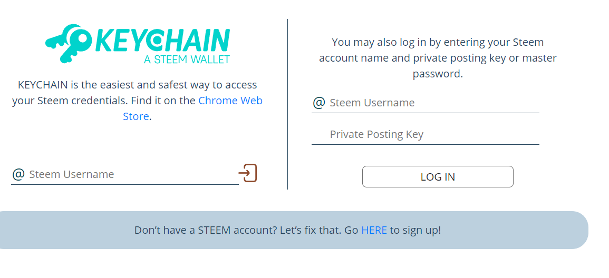

第1章 入门 Getting Started
1.1 Steem Engine 入门
1.2 Steem Engine 常用操作
1.2.1 怎样在 Steem Engine 购买代币？ 1
众所周知，Steemit Inc的SMT计划一拖再拖。终于，大家受不了这么漫长的等待，由@aggroed带头开始社区自己搞SMT。
几个月时间，steem-engine就上线了~ 上线后有很多DApps，社区在上面创建了属于自己的币。
比如@tipu的TPU，韩国社区的JJM，YES，STEEMSC 等币已经在steem-engine上面拥有很多交易量了
如果你也对steem-engine上面的币心动，想着购买，这里介绍一下大概的购买流程。
登录 steem-engine.com
有2种登录方式： * 安装Chrome/Brave/Firefox浏览器插件steem keychain。 推荐keychain。很方便的插件。相当于集很多功能的STEEM钱包。具体怎么安装设置keychain，可以看看这篇帖子：https://busy.org/@ericet/steempeak-w0yo19h857 * posting key登录 直接输入steem id和发帖密钥登录

充值
登录后，点击页面上方的“Market”，然后“Deposit”（充值）
之前只支持STEEM充值，没想到1个月不到已经可以支持LTC，BTC，BCH，DOGE了 选择你拥有的币的种类，按照提示充值。 需要注意的是，提现充值需要收取1%的手续费。但是交易是没有费用的
等你充值成功后，在你的钱包里会多了一个STEEMP的币。 这个币是1:1 和STEEM挂钩的，任何时候充值提现，1STEEMP都等于1STEEM。
交易
充好值后，点击页面上方的“TOKENS”，查看所有的币。 选择你想购买的币，点击图上双箭头的标志。
进入交易页面。可以选择买入币（Buy XXX）或者卖出币（Sell XXX）。价格是按STEEM算的
填入自己心仪的价格后，就可以点击“Buy”或者“Sell”按钮
好了，单子挂好了，就等交易成功了。
虽然目前steem-engine上有很多乱七八糟的币，但是引入币的概念对DApp还是社区的发展都是有益的。
1.2.2 钱包常用操作 2
锁仓 Stake
登录steem-engine进入你的钱包（Wallet）。
主要界面是英文大家用起来不熟悉而已，其实鼠标悬停，最右边的几个图标都有英文简介（貌似可以有7个图标这里就5个）。
image.png
如图最右边你看到一个锁着的按钮，表示你有未锁仓的ttoken可以操作锁仓。锁仓几乎就是power down
当你按下之后，更具提示输入你要锁仓的金额就可以了！ 确认锁仓后你会看到解锁的图标，当你需要解除锁仓时，可以点击这个图标，类似power up。
需要注意的是每种token的解锁时效是不一样的，锁仓前最好了了解一下哟！
1.3 SCOT 入门
1.3.1 什么是 SCOT？ 3
社区的行动派大佬@aggroed继steemmonsters，steem-engine, STO后又出新作~ SCOT( Smart Contract Organizational Token) SCOT Testing underway!!! Are you ready for your own token that can distribute like Steem?
这个SCOT是什么呢？其实就是steemit inc从几年前一直鼓吹的SMT。
SMT的概念是，每个社区可以在STEEM区块链上创建属于自己的币。每个社区可以创建属于自己的steemit.com前端，文章的收益除了STEEM外还有自己创建的币。
打个比方，steempress发了SMT。所有通过steempress插件发布的文章除了STEEM收益外，还可以获得steempress自己的代币。steempress的代币可以通过steem-engine交易成其他货币（BTC，LTC，STEEM等）。获得的steempress代币的多少，取决于给你点赞人持有的steempress的代币多少。
SCOT就是拿了SMT的理念，把他变成现实。
但是和SMT不一样的是，SCOT是建立在STEEM的第二层，而不是像SMT那样全部建立在STEEM链上。这样做的好处是：
- 不需要硬分叉。如果建立在STEEM链上需要硬分叉，大家也知道上回的硬分叉给STEEM带来多少问题吧。
- 快捷。修改STEEM代码是非常花费时间。
SCOT会带给STEEM什么好处呢？
- 不需要分叉来建立新的代币。很多steem的分叉，比如weku，whaleshares，bearshares，golos都是steem的分叉，都有属于自己的代币。如果STEEM拥有SMT的属性，那这些平台就只要基于STEEM创建一个自己的代币和平台，而不需要来个分叉创建平台和代币。
- 每个社区将可以按照自己的规则管理自己的社区。
很高兴有机会当SCOT的测试员，抢先体验了一下SCOT。
aggroed发了72000 SCOT用于测试，要求随便发帖加上scottest的标签，并且给scottest标签底下的帖子点赞
测试版的steem-engine多了Stake和unstake的选项。按照我自己的理解，stack就等于power up，unstack等于power down
帖子获得的SCOT的多少取决于给你点赞的人拥有多少stake的SCOT（相当于拥有多少SP）
unstake需要多久才能提现这个应该是可以设置的，还有帖子SCOT收益部分多久结算也应该是可以设置的。可能帖子收益和审查收益的比例也可以设置(?) 很多种未知的可能。
看了上面的设置，CN区完全可以出一个属于自己的SCOT，各种规则由CN区自己做主。比如steemcleaners按照他们的标准踩CN区的帖子，这里完全可以CN区自己管理。毕竟每个社区的标准不同。
1.3.2 ScotBot 的设定 4
今天@aggroed介绍了ScotBot的具体设置：Scot and Scotbot Part III: Scotbot settings.
主要有以下这些设置：
- author_curve_exponent：作者收益可选线性（1）或者曲线（2）
- author_reward_percentage: 作者获得帖子收益的百分百(0-100). 比如现在steem的设置是75%给帖子作者，25%给curators。
- cashout_window_days: 帖子结算天数（0.1 - 365）。steem目前的设置是7天，如果这个参数改成1的话，就是每天帖子1结算。
- curation_curve_exponent: Curator收益可选普通线性(0.5) - 极端线性(2.0)
- downvote_power_consumption: 踩后帖子扣除收益的百分百（1 - 10000 ) 100代表1%，10000代表100%。如果要设置成和steem现在的设置一样，踩和点赞耗费同样多的VP，downvote_power_consumption 和 vote_power_consumption 要设置成一样的参数。
- downvote_regeneration_seconds: 踩的奖金池恢复速度。如果要和steem的一样，设置参数为432000（6天）。如果不想要这个设定，设置成-1.
- issue_token: 是否发行代币。选择true或者false
- json_metadata_key: 这个选项目前只能填“tags”，意思是，在特定的标签里的帖子才会获得代币。未来会添加“urls”这个选项，意思是在这个链接底下的帖子将会获得代币。
- json_metadata_value: 因为目前只有“tags”的选项，所有这里输入你要设置哪个标签底下的帖子才会获得代币。比如设置“cn”，发cn标签的帖子将会自动获得代币。
- reduction_every_n_block: 多少个区块减少比例。可以设置10512000（一年）。一年后，将减少派送的代币的比例。
- reduction_percentage: 减少的比例。 Steem现在的设置是0.5%，意思是每年生出的STEEM数量减少大概0.5%。
- rewards_token: 每生产X个区块，有多少代币放入奖金池。Steem目前的设定好像是每3个区块将产生1个STEEM
- rewards_token_every_n_block": 设置X区块。比如设置成10，就是每10个区块将生产X个代币。
- token: 代币的符号
- token_account: 代币账号
- vote_power_consumption: 点赞的消耗率。Steem现在是2，意思是每次满赞耗费2%
- vote_regeneration_seconds": 需要多久时间恢复VP。STEEM的设置是432000（5天），就是每天恢复20%，5天恢复。
从以上的设置来看，SCOT给了社区/DApps很多的权利来选择自己想要的参数。
作者：@ericet，原文链接：https://busy.org/@ericet/steem-engine-7mkxyo7yjn↩
作者：@shine.wong，原文链接：https://busy.org/@shine.wong/steem-engine↩
作者：@ericet，原文链接：https://busy.org/@ericet/steem-engine-7mkxyo7yjn↩
作者：@ericet，原文链接：https://busy.org/@ericet/scotbot-1b94mfpktn/↩